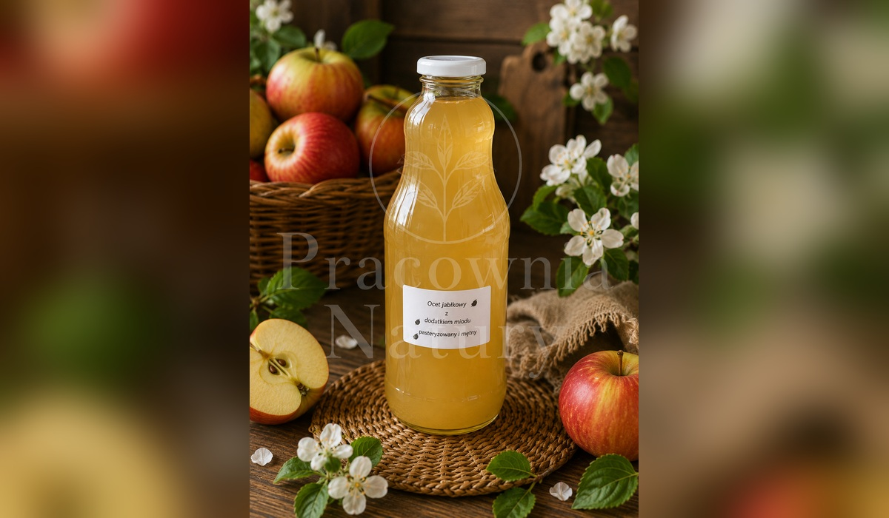

🌿 Wszystkie wyroby przygotowywane są ręcznie w małych partiach.
Pracownia Natury EKO
RĘCZNIE TWORZONE PRODUKTY INSPIROWANE NATURĄ
☰
Strona główna
Nasze wyroby
O Pracowni
Atlas roślin
Kontakt
← Powrót do kategorii
Nasze wyroby
Fermenty i zakwasy
Wybierz wyrób, sprawdź opis i cenę, a następnie dodaj go do koszyka.
wyrób Pracowni
Zakwas Enzymy Bołotowa
📖 Opis produktu
wyrób Pracowni
Zakwas buraczany
📖 Opis produktu
wyrób Pracowni
Natto (nattokinaza)
📖 Opis produktu

wyrób Pracowni
Ocet jabłkowy
📖 Opis produktu